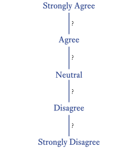
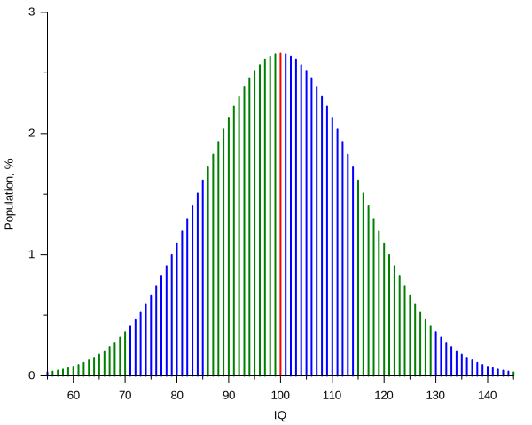

graph TD
A[Data] --> B[Qualitative]
A --> C[Quantitative]
B --> D[Nominal]
B --> E[Ordinal]
C --> F[Discrete]
C --> G[Continuous]
style A fill:#e1f5ff
style B fill:#fff4e1
style C fill:#ffe1f5
style D fill:#f0f0f0
style E fill:#f0f0f0
style F fill:#f0f0f0
style G fill:#f0f0f0
3 Understanding Data Types in Social Sciences
In social science research, understanding the nature of our data is crucial for selecting appropriate analysis methods and drawing valid conclusions.
3.1 Foundations in Number Sets
Before diving into data types, it’s essential to understand the basic number sets that form the foundation of our understanding of data.
Basic Number Sets
- Natural Numbers (ℕ): The counting numbers {0, 1, 2, 3, …}
- Integers (ℤ): Includes natural numbers, their negatives, and zero {…, -2, -1, 0, 1, 2, …}
- Rational Numbers (ℚ): Numbers that can be expressed as a fraction of two integers
- Real Numbers (ℝ): All numbers on the number line, including rationals and irrationals
Properties of Sets
Countable Sets: Sets whose elements can be put in a one-to-one correspondence with the natural numbers. For example, the set of integers is countable.
Uncountable Sets: Sets that are not countable. The set of real numbers is uncountable.
Discrete Sets: Sets where each element is separated from other elements by a finite gap. The integers form a discrete set.
Dense Sets: Sets where between any two elements, there is always another element of the set. The rational numbers and real numbers are dense sets.
Note
Understanding these set properties is crucial for grasping the nature of different data types in social sciences.
3.2 Types of Data (Basic Typologies)
At a fundamental level, data variables can be classified as either numerical (quantitative) or categorical (qualitative).
Numerical data represents each data point as a number (e.g., items sold, temperature, height, age). It can be discrete (counted) or continuous (measured).
Categorical data represents each data point as a word or label (e.g., brand names, animal types, colours, countries). It can be ordinal (ordered, like rankings) or nominal (unordered, like names).
Data Typology 1: Qualitative vs Quantitative
Data Typology 2: Stevens’ Levels of Measurement
graph TD
A[Levels of Measurement] --> B[Categorical/Qualitative]
A --> C[Numerical/Quantitative]
B --> D[Nominal]
B --> E[Ordinal]
C --> F[Interval]
C --> G[Ratio]
D --> D1[Categories only<br/>e.g., gender, color]
E --> E1[Ordered categories<br/>e.g., rankings, grades]
F --> F1[Equal intervals, no true zero<br/>e.g., temperature °C]
G --> G1[Equal intervals, true zero<br/>e.g., height, weight, age, Kelvins]
style A fill:#e1f5ff
style B fill:#fff4e1
style C fill:#ffe1f5
style D fill:#f0f0f0
style E fill:#f0f0f0
style F fill:#f0f0f0
style G fill:#f0f0f0
Key Difference: Categorical vs. Numerical Scales
The fundamental difference between categorical and numerical scales lies not in the number of categories, but in the nature of the intervals. Numerical scales (interval and ratio) have intervals defined by an objective, physical measurement standard. For example:
- Temperature: each degree represents the same amount of thermal energy change, regardless of how we feel about it
- Distance: a centimeter between 5cm and 6cm represents exactly the same physical length as a centimeter between 105cm and 106cm
- Time: a second between 10:00:01 and 10:00:02 has the same duration as a second between 15:47:33 and 15:47:34
- Weight: the difference between 50kg and 51kg represents the same amount of mass as the difference between 150kg and 151kg
Categorical scales, including all rating scales, lack this objective standard: even a 1000-point rating scale remains ordinal because the intervals are psychologically defined, not physically measured. When someone rates their agreement as “7” versus “8” on a scale from 1 to 1000, there is no guarantee that the psychological distance between 7 and 8 equals the distance between 47 and 48, or between 847 and 848. The respondent is essentially choosing among ordered categories, not measuring with, e.g., a ruler. Adding more categories doesn’t create equal intervals - it just creates more ordered categories. This is why even a seemingly continuous rating scale with hundreds of values remains fundamentally categorical: it lacks the objective measurement standard that would make the intervals provably equal.
3.3 Discrete vs. Continuous Data (Quantitative Data)
In data science and statistics, we categorize variables as either discrete or continuous. This distinction shapes how we analyze data and which statistical methods we apply. However, the boundary between these categories is not always clear-cut, and some variables exhibit characteristics of both types. This section explores discrete and continuous data, their differences, and the interesting cases of variables that challenge our intuitive understanding.

Discrete Data
Discrete data can only take on specific, countable values. These values are often (but not always) integers.
Characteristics of Discrete Data:
- Countable set of possible values
- Often represented by integers
- Can be finite or infinite
- No values exist between two adjacent data points
Examples:
- Number of students in a class
- Number of cars sold by a dealership
- Number of coins in a piggy bank
- Dice rolls (1, 2, 3, 4, 5, or 6)
Continuous Data
Continuous data can take on any value within a given range, including fractional and decimal values. Importantly, continuity is characterized by density: between any two values, there are infinitely many other possible values.
Characteristics of Continuous Data:
- Values from dense sets (rational numbers or real numbers)
- Can be measured to any level of precision (theoretically)
- There are infinitely many values between any two data points
- Typically represented on a continuous scale
Examples:
- Height
- Weight
- Temperature
- Time duration
Mathematical Note: Density and Continuity
Continuous data comes from dense sets, where between any two distinct values, there exists another value from the set. The most common examples are:
- Real numbers: Uncountable and dense
- Rational numbers: Countable but dense
This density property is what gives continuous data its characteristic “smoothness” and allows us to apply calculus-based statistical methods.
The Discrete-Continuous Spectrum
In practice, some variables that are mathematically discrete are often treated as if they are continuous. This dual nature provides flexibility in how these variables can be analyzed and interpreted.
Reasons for Treating Discrete Data as Continuous:
Fine Granularity (Small Discrete Increments)
- When a discrete variable has very small increments between possible values, it can approximate continuity.
- Example: Income measured in individual cents. While technically discrete, the tiny increments and vast number of possible values make it behave similarly to a continuous variable.
Analytical Convenience
- Continuous methods often yield reasonable and useful results even for dense discrete variables.
- Assuming continuity allows the use of calculus-based methods and existing statistical tools.
Approximation of Underlying Phenomena
- A discrete measurement might represent an underlying continuous process.
- Example: While we measure time in discrete units (seconds, minutes, hours), time itself flows continuously.
Examples of Variables with Dual Discrete-Continuous Nature:
Age
- Discrete: Typically reported in whole years
- Continuous: Can be considered as a continuous variable in many analyses, especially when dealing with large populations or when precision matters
Price and Income
- Discrete: Prices and incomes are actually measured in discrete units (e.g., cents or smallest currency unit)
- Continuous: In economic models and many analyses, treated as continuous variables due to their dense nature and analytical convenience
Test Scores
- Discrete: Often given as whole numbers or fixed increments
- Continuous: In statistical analyses, may be treated as continuous, especially when the range of possible scores is large
Conclusion
The distinction between discrete and continuous data is not always rigid in practice. Many variables, including those involving money, percentages, or dense measurements, can be viewed through both discrete and continuous lenses. When in doubt, consider both your measurement precision and your analytical goals when deciding how to treat a variable. The choice should be guided by the nature of the data, the goals of the analysis, and the potential implications of the choice. This flexibility, when used thoughtfully, provides powerful tools for researchers to gain insights from their data.
Discrete vs. Continuous Numerical Data: A Language-Based Analogies
The Language Connection
Think about how you naturally ask questions about quantities:
- “How many cookies are in the jar?” (counting)
- “How much water is in the glass?” (measuring)
This natural language distinction reflects the two fundamental types of numerical data:
Discrete Data = “How Many?” Questions
Like counting whole objects (countable nouns)
Takes specific values with gaps between them
Examples:
- Number of pets: 0, 1, 2, 3… (can’t have 2.5 pets)
- Dice rolls: 1, 2, 3, 4, 5, 6
- Students in a class: 20, 21, 22…
ü§î Self-Check: Can you find a value between 2 and 3 students? Why not?
Continuous Data = “How Much?” Questions
Like measuring quantities (uncountable nouns)
Can take any value within a range
Examples:
- Height: 1.7231… meters
- Temperature: 36.8325… °C
- Time: 3.5792… hours
ü§î Self-Check: Write down three different values between 1.72 and 1.73 meters
Quick Recognition Guide
- If you naturally ask “How many?” → Discrete
- If you naturally ask “How much?” → Continuous
- If you can measure it more precisely → Continuous
- If you can only use whole numbers → Discrete
✍️ Practice: Classify these quantities as discrete or continuous
- Your age in years: _____
- Your height: _____
- Number of songs in a playlist: _____
- Volume of water: _____
3.4 Introduction to Stevens’ Data Typology
Stanley S. Stevens, an American psychologist, introduced a classification system for scales of measurement in his 1946 paper “On the Theory of Scales of Measurement.” This system, known as Stevens’ data typology or levels of measurement, has become fundamental in understanding how different types of data should be analyzed and interpreted.
Stevens proposed four levels of measurement:
- Nominal
- Ordinal
- Interval
- Ratio
Each level has specific properties and allows for different types of statistical operations and analyses.


Why “Levels” of Measurement?
Stanley Stevens used the term “levels of measurement” rather than simply “types” because he conceived of them as existing in a hierarchy, where each level builds upon the previous one with increasing mathematical properties.
Hierarchical Structure:
Stevens organized them from least to most informative: Nominal → Ordinal → Interval → Ratio. Each level includes all properties of the levels below it, plus additional mathematical characteristics.
Measurement Theory Perspective:
Stevens was fundamentally concerned with what mathematical operations are meaningful at each level:
- Nominal: only equality comparisons
- Ordinal: adds greater than/less than
- Interval: adds addition and subtraction
- Ratio: adds multiplication, division, and meaningful ratios
The word “level” emphasizes that these aren’t just arbitrary categories, but represent degrees of measurement sophistication. Higher levels allow more powerful statistical analyses and convey more information about the underlying phenomena being measured.
This hierarchical framing helped researchers understand not just what kind of data they had, but what they could legitimately do with it statistically.
Nominal Scale
Definition
The nominal scale is the most basic level of measurement. It uses labels or categories to classify data without any quantitative value or order.
Properties
- Categories are mutually exclusive
- No inherent order among categories
- No meaningful arithmetic operations can be performed
Examples
- Nationality (Polish, English, …)
- Blood types (A, B, AB, O)
- Eye color (Blue, Brown, Green, Hazel)
- Binary variables (“Success” versus “Failure”)
Ordinal Scale
Definition
The ordinal scale categorizes data into ordered categories, but the intervals between categories are not necessarily equal or meaningful.
Properties
- Categories have a defined order
- Differences between categories are not quantifiable
- Arithmetic operations on the numbers are not meaningful
Examples
- Education levels (High School, Bachelor’s, Master’s, PhD)
- Likert scales (Strongly Disagree, Disagree, Neutral, Agree, Strongly Agree)
- Socioeconomic status (Low, Medium, High)
Likert Scale Question Types
Likert scales are a type of rating scale that constitute an ordinal level of measurement, meaning responses can be ranked in order but the distances between points are not necessarily equal.
Agreement Scale (Strongly Disagree → Strongly Agree)
- Best for measuring beliefs and perceptions
- Example: “This website is easy to navigate”
Satisfaction Scale (Very Dissatisfied → Very Satisfied)
- Ideal for evaluating experiences and services
- Example: “How satisfied are you with the customer service you received?”
Opinion Scale (Strongly Oppose → Strongly Support)
- Used to gauge positions on proposals or initiatives
- Example: “How do you feel about implementing a hybrid work policy?”
Frequency/Attitude Scale (Never → Always)
- Measures behavioral patterns and consistency
- Example: “I would recommend this product to others”
Best Practices: Use 5-7 point scales, ensure statements are clear and unambiguous, and maintain consistent directionality (positive to negative or vice versa).
The choice between even (without midpoint) and odd Likert scales is a substantive methodological decision, not just a formatting preference. There’s no consensus in the literature that one approach is universally superior. Your choice should be driven by your theoretical framework and what the midpoint would actually represent in your specific context. What are you measuring, and do you have a theoretical reason to believe neutrality should or shouldn’t exist?
Examples of rating scales

Interval Scale
Definition
The interval scale has ordered categories with equal intervals between adjacent categories. However, it lacks a true zero point.
Properties
Equal intervals between adjacent categories: The difference between any two adjacent values represents the same magnitude of change. For example, the difference between 10°C and 20°C represents the same amount of temperature change as the difference between 80°C and 90°C. This means we can meaningfully add and subtract values (e.g., “it’s 5 degrees warmer today than yesterday”).
No true zero point (zero is arbitrary): Zero does not represent the complete absence of the measured property. For example, 0°C does not mean “no temperature” - it’s simply the freezing point of water. This arbitrary zero could be placed elsewhere (as in Fahrenheit, where water freezes at 32°F).
Ratios between values are not meaningful: Because zero is arbitrary, we cannot say that 20°C is “twice as hot” as 10°C. If we converted to Fahrenheit (50°F and 68°F), the ratio would be completely different, showing that the ratio depends on our arbitrary choice of scale.
Key insight: On an interval scale, differences have consistent meaning, but ratios do not.
Examples
- Temperature in Celsius or Fahrenheit
- Calendar years
- pH scale (the difference between pH 4 and 5 represents the same change in hydrogen ion concentration as between pH 6 and 7)
- Elevation above sea level
Ratio Scale
Definition
The ratio scale is the highest level of measurement. It has all the properties of the interval scale plus a true zero point, making ratios between values meaningful.
Properties
- All properties of interval scales
- True zero point
- Ratios between values are meaningful
Examples
- Height
- Weight
- Age
- Income
Why Some Statistics Work (and Others Don’t) for Interval Scales
Key Idea
An interval scale is one where the distances between values are meaningful, but the zero point is arbitrary. For interval scales (e.g., temperature):
- Allowed: Addition/subtraction of values and multiplication/division by constants.
- Not allowed: Multiplication/division of values from the scale by each other, as this leads to results without physical interpretation.
Properties of Interval Scales
- Equal intervals represent the same differences:
- The difference between 20°C and 25°C (5°C) represents the same change as between 30°C and 35°C.
- Proportions of differences are preserved: 10°C is twice the change of 5°C.
- The zero point is arbitrary:
- 0°C is the freezing point of water, not the absence of temperature.
- The same physical state has different values in different scales: 0°C = 32°F.
- Linear transformation:
- General formula: y = ax + b, where a \neq 0.
- For temperature: F = C \times \frac{9}{5} + 32.
Theoretical Conclusions
- Allowed operations:
- Addition/subtraction (preserves differences).
- Multiplication/division by constants (scaling).
- Arithmetic means.
- Comparing temperature differences.
- Not allowed operations:
- Multiplying temperatures by each other.
- Dividing temperatures by each other.
- Geometric means.
- Coefficient of variation.
- Practical implications:
- Variance and standard deviation require careful interpretation.
- Better to use measures based on differences (e.g., MAD - mean absolute deviation).
- When comparing variability, it is advisable to standardize the data.
Practical Rule
If your calculations involve multiplying values from an interval scale by each other, be particularly cautious in interpreting the results!
Importance in Research and Analysis
Understanding Stevens’ data typology is crucial for several reasons:
Choosing appropriate statistical tests: The level of measurement determines which statistical analyses are appropriate for a given dataset.
Interpreting results: The meaning of statistical results depends on the level of measurement of the variables involved.
Designing measurement instruments: When creating surveys or other measurement tools, researchers must consider the level of measurement they want to achieve.
Data transformation: Sometimes, data can be transformed from one level to another, but this must be done carefully to avoid misinterpretation.
Controversies and Limitations
While Stevens’ typology is widely used, it has faced some criticisms:
Rigidity: Some argue that the typology is too rigid and that many real-world measurements fall between these categories.
Treatment of ordinal data: There’s ongoing debate about when it’s appropriate to treat ordinal data as interval for certain analyses.
Psychological scaling: Some psychological constructs (like intelligence) are difficult to categorize definitively within this system.
Conclusion
Stevens’ data typology provides a fundamental framework for understanding different types of data and their properties. By recognizing the level of measurement of their variables, researchers can make informed decisions about data collection, analysis, and interpretation. However, it’s important to remember that while this typology is a useful guide, real-world data often requires nuanced consideration and may not always fit neatly into these categories.
pH as an Interval Scale
pH is considered an interval scale because:
Ordered values: Lower pH values indicate higher acidity, while higher values indicate higher alkalinity.
Equal intervals: Each unit change in pH represents a consistent tenfold change in hydrogen ion concentration (logarithmic scale). The interval between pH 4 and pH 5 is equivalent to the interval between pH 7 and pH 8.
No true zero: pH 0 does not represent a complete absence of hydrogen ions. Negative pH values and values above 14 are possible in extreme conditions.
Ratios are not meaningful: A pH of 4 is not “twice as acidic” as a pH of 2. Relative acidity is determined by the ratio of hydrogen ion concentrations, not pH values themselves.
These characteristics align with the interval scale definition: differences between values are meaningful and consistent, but ratios cannot be interpreted.
3.5 Common Ordinal Scales in Behavioural Research
Many measures in psychology and social sciences are ordinal in nature, even when they appear as numbers. Understanding this distinction is crucial for proper analysis and interpretation. Let’s explore the most common examples.
Likert Scales
Likert scales are widely used in psychology and social sciences to measure attitudes, opinions, and perceptions. Named after psychologist Rensis Likert, these scales typically consist of statements or questions that respondents rate on a scale, often from “Strongly Disagree” to “Strongly Agree.”

Why Likert Scales are Ordinal Variables
Likert scales are ordinal because:
Order without equal intervals: While responses have a clear order (e.g., “Strongly Disagree” < “Disagree” < “Neutral” < “Agree” < “Strongly Agree”), we cannot assume the psychological distance between “Disagree” and “Neutral” equals the distance between “Neutral” and “Agree.”
Subjective interpretation: Different respondents may interpret the same scale points differently. What feels like “Agree” to one person might be “Strongly Agree” to another.
Lack of true zero point: There’s no absolute zero representing “complete absence” of the attitude being measured.
Tip
Think of it this way: If you’re ranking your favorite films as “Love it,” “Like it,” “Neutral,” “Dislike it,” “Hate it,” you know the order clearly. But can you say the difference between “Love it” and “Like it” is exactly the same as between “Dislike it” and “Hate it”? Probably not.
IQ Scores: A Complex Case
IQ appears to be a continuous, interval-level measure, but it’s fundamentally ordinal. This is one of the most misunderstood aspects of psychological measurement.
How IQ Scores are Actually Created
Let’s walk through a concrete example:
Collecting raw scores: 1,000 children take a test with 60 questions. Child A answers 45 correctly, Child B answers 38, Child C answers 52, etc.
Ranking: All 1,000 raw scores are ordered from lowest (say, 12 correct) to highest (say, 58 correct)
Percentile assignment: Child A (45 correct) is at the 70th percentile—better than 70% of children. Child C (52 correct) is at the 95th percentile.
What is a Percentile?
A percentile tells you what percentage of people scored below you.
Examples:
- 50th percentile = you scored better than 50% of people (exactly average)
- 70th percentile = you scored better than 70% of people (above average)
- 95th percentile = you scored better than 95% of people (well above average)
- 10th percentile = you scored better than only 10% of people (below average)
If you’re at the 80th percentile, it means 80% of people scored lower than you, and 20% scored higher.
- Mathematical transformation: These percentiles are converted to IQ scores so that the mean equals 100 and standard deviation equals 15. Child A gets IQ 110, Child C gets IQ 125.
The fundamental issue: This process forces the scores into a bell curve shape, even if the original raw scores weren’t bell-shaped. Imagine if most children got either 20-30 questions right or 50-55 questions right, with few in between. The transformation would still produce a smooth bell curve of IQ scores, hiding this gap in the actual test performance.
What is a Bell-Shaped (Normal) Distribution?
A bell-shaped distribution, also called a normal distribution or bell curve, is a symmetrical pattern where:
- Most values cluster around the average (the middle of the bell)
- Fewer values appear as you move away from the average in either direction
- The distribution is symmetrical—the left and right sides mirror each other
Think of heights: Most people are around average height (170-180 cm), fewer people are very short (150 cm) or very tall (200 cm), creating a bell shape.
In IQ: The scores are transformed so that most people score around 100 (the peak of the bell), fewer people score 85 or 115 (moving down the sides), and very few people score 70 or 130 (at the tails).
The key issue: Real test performance might not naturally follow this pattern, but the IQ transformation forces it into one.

Key Point
IQ 130 does not mean “twice the intelligence” of IQ 65. IQ points only indicate a person’s position relative to others in the standardization sample, not an absolute quantity of intelligence.
The Methodological Compromise
In research practice, IQ is often treated as an interval scale. This is a pragmatic compromise that allows researchers to use more powerful statistical tools, but it comes with important caveats.
✅ Treating IQ as interval is acceptable when:
- Using standard statistical tests (correlations, regressions, t-tests) for exploratory or applied research
- Comparing groups who took the same IQ test, scored by the same norms (e.g., comparing 8-year-olds who all took WISC-V using 2024 norms—NOT comparing WISC-V scores to Stanford-Binet scores, or 2024 norms to 1990 norms)
- You explicitly acknowledge this limitation in your interpretation
- Your conclusions focus on patterns rather than precise numerical differences
⚠️ Remember the limitations:
- This treatment works better for scores near the population mean (IQ 85-115) than at the extremes (IQ 70 or IQ 145)
- The assumption of equal intervals is an approximation, not reality
- Results must be interpreted with appropriate caution
❌ Never:
- Claim that equal IQ differences mean equal differences in ability (e.g., saying “the gap between IQ 100 and 115 represents the same cognitive difference as the gap between IQ 85 and 100”)
- Use ratio statements like “twice as intelligent” or “50% smarter”
- Say “Person A with IQ 130 is 15 points smarter than Person B with IQ 115, and Person B is 15 points smarter than Person C with IQ 100, so all three differences are equal”
- Interpret IQ differences as if they were physical measurements like height or weight
Other Psychological Measures
Many widely-used psychological instruments share IQ’s ordinal nature:
Depression scales (e.g., Beck Depression Inventory): A score of 20 doesn’t mean “twice as depressed” as a score of 10. Someone scoring 30 might be having severe daily symptoms, while someone scoring 15 might have mild occasional symptoms—but the 15-point difference doesn’t represent the same change in depression severity as the difference between scores of 5 and 20.
Anxiety measures (e.g., State-Trait Anxiety Inventory): If three people score 30, 45, and 60, we know the order of their anxiety levels, but we can’t say the psychological distance between the first two equals the distance between the last two.
Personality assessments (e.g., Big Five Inventory): A score of 80 on Extraversion doesn’t mean “twice as extraverted” as a score of 40—it just means more extraverted.

These measures often use summed Likert-type items or other scoring methods that don’t guarantee equal intervals between scores, despite appearing as continuous numbers.
3.6 Conclusion
The ordinal nature of behavioural measures presents both a conceptual challenge and a practical dilemma. While these scales provide valuable information about relative standing and group differences, they don’t support the precise quantitative interpretations we might wish for.
Key takeaway: Most behavioural measures tell us about order and relative position, not about absolute quantities or equal intervals. This doesn’t make them less useful—it just means we must interpret them appropriately and honestly communicate their limitations to our students, readers, and research consumers.
Practical summary:
- A higher score means more of the characteristic—this we can say confidently
- Group A scoring higher than Group B—this is a valid conclusion
- The difference between scores of 100 and 115 being exactly equal to the difference between 115 and 130—this we cannot claim
By acknowledging these limitations and choosing appropriate analytical methods, we can conduct rigorous research while maintaining scientific integrity.
How Does the Transformation from Percentiles to IQ Work Exactly (*)?
The transformation proceeds in two steps:
Step 1: From percentile to standard score (z-score)
A percentile is transformed into a standard score, which tells you how many standard deviations you are from the mean in a normal distribution.
Examples:
- 50th percentile (average) → z = 0
- 84th percentile → z = +1 (one standard deviation above the mean)
- 16th percentile → z = -1 (one standard deviation below the mean)
- 98th percentile → z = +2
- 2nd percentile → z = -2
What is a z-score and why do we use it?
A standard score (z-score) is a way of expressing where a given value falls relative to the rest of the data, using a common “measure of distance.”
Standardization formula (z-score):
z = \frac{X - \mu}{\sigma}
Where:
- X = raw score (e.g., number of correct answers)
- \mu = mean in the group
- \sigma = standard deviation in the group
Where does this formula come from?
The standardization process consists of two operations:
- (X - \mu) — centering: we subtract the mean from each value
- After this operation, the new mean = 0
- Example: if X = 45, \mu = 40, then (45 - 40) = 5 points above the mean
- /\sigma — scaling: we divide by the standard deviation
- After this operation, the new standard deviation = 1
- Example: if \sigma = 10, then 5 points above the mean = 5/10 = 0.5 standard deviations
Result of standardization: We obtain a variable that has \mu = 0 and \sigma = 1, regardless of what the original values were!
Intuitive example:
Imagine three tests:
- Test A: \mu = 50 points, \sigma = 10 points
- Test B: \mu = 200 points, \sigma = 40 points
- Test C: \mu = 15 points, \sigma = 3 points
A student who scores one standard deviation above the mean on each test will receive:
- Test A: 60 points → z = \frac{60-50}{10} = +1
- Test B: 240 points → z = \frac{240-200}{40} = +1
- Test C: 18 points → z = \frac{18-15}{3} = +1
The raw scores are very different (60, 240, 18), but the z-score is the same (+1), which means the same relative position on each test. This is exactly what allows us to compare scores from different tests!
Step 2: From standard score to IQ (de-standardization)
De-standardization is the reverse of the standardization process. If standardization transforms data to a scale with mean 0 and standard deviation 1, then de-standardization allows us to return to any chosen mean and standard deviation.
De-standardization formula:
X = \mu + \sigma \times z
Where does this formula come from?
This is an algebraic transformation of the z-score formula. We solve it for X:
\begin{align} z &= \frac{X - \mu}{\sigma} \\[0.5em] z \times \sigma &= X - \mu \quad \text{(multiply both sides by } \sigma \text{)} \\[0.5em] X &= \mu + \sigma \times z \quad \text{(add } \mu \text{ to both sides)} \end{align}
What does this formula mean intuitively?
“Take the mean (\mu), and add the appropriate number of standard deviations (\sigma \times z) to it”
- If z = +1, you add one standard deviation to the mean: X = \mu + \sigma
- If z = -1, you subtract one standard deviation from the mean: X = \mu - \sigma
- If z = 0, you get exactly the mean: X = \mu
IQ transformation is de-standardization with \mu = 100 and \sigma = 15:
\text{IQ} = 100 + 15 \times z
Why 100 and 15 specifically?
This is an arbitrary convention established by David Wechsler in the 1930s for the WISC and WAIS scales. Earlier tests (like Stanford-Binet) used different values (\mu = 100, but \sigma = 16). Contemporary IQ tests most commonly use the convention \mu = 100, \sigma = 15, which makes it easier to compare scores between different tests.
Theoretically, we could choose any values (e.g., \mu = 500, \sigma = 100 as in the SAT), but 100 and 15 have become the standard for intelligence tests.
Comparison: standardization vs. de-standardization (IQ transformation)
| Operation | Formula | Mean | Standard deviation | Direction |
|---|---|---|---|---|
| Standardization | z = \frac{X - \mu}{\sigma} | 0 | 1 | Raw scores → z-score |
| De-standardization (IQ) | \text{IQ} = 100 + 15 \times z | 100 | 15 | z-score → IQ |
Logic of the process:
- Standardization creates a “neutral” scale (\mu = 0, \sigma = 1) — a common “currency”
- De-standardization transforms this neutral scale to more convenient numbers (\mu = 100, \sigma = 15) — currency exchange at a fixed rate
It’s like temperature: Celsius → Kelvin (standardization to a “natural” scale) → Fahrenheit (transformation to another scale).
Concrete calculation example:
Child C is at the 95th percentile:
- The 95th percentile in a normal distribution corresponds to z \approx +1.645
- \text{IQ} = 100 + 15 \times 1.645 = 100 + 24.675 \approx 125
Child A is at the 70th percentile:
- The 70th percentile corresponds to z \approx +0.524
- \text{IQ} = 100 + 15 \times 0.524 = 100 + 7.86 \approx 108
Key observation:
This formula can be applied to any data — even if the raw scores don’t have a normal distribution. This is exactly what “forcing” a normal distribution means — the mathematics creates a bell curve regardless of the actual shape of the data. Percentiles are transformed through a theoretical normal distribution, not the actual distribution of raw scores.
In R:
# Standardization of a variable
raw_scores <- c(35, 42, 45, 38, 51)
z_scores <- scale(raw_scores) # mean = 0, SD = 1
# De-standardization: back to original parameters
mean_original <- mean(raw_scores)
sd_original <- sd(raw_scores)
back_to_original <- mean_original + sd_original * z_scores
# Transformation of percentiles to IQ (de-standardization with μ=100, σ=15)
percentiles <- c(0.70, 0.95) # 70th and 95th percentile
z_from_percentile <- qnorm(percentiles) # Step 1: percentile → z
IQ <- 100 + 15 * z_from_percentile # Step 2: z → IQ (de-standardization)
# Result: 108, 1253.7 Exercise: Identifying Measurement Scales
For each of the following variables, determine the most appropriate scale of measurement (Nominal, Ordinal, Interval, or Ratio). Also evaluate whether the variable is discrete or continuous.
- Gender
- Customer satisfaction: Poor, Fair, Good, Excellent
- Height (questionnaire): “I am: very short, short, average, tall, very tall”
- Height (inches)
- Reaction time (milliseconds)
- Postal codes: e.g., 61548, 61761, 62461, 47424, 65233
- Age (years)
- Nationality
- Street addresses
- Military ranks
- Left-Right political self-placement (0-10 scale)
- Family size: 1 child, 2 children, 3 children, …
- IQ score
- Shirt size (S, M, L, XL, …)
- Movie ratings (1 star, 2 stars, 3 stars, 4 stars, 5 stars)
- Temperature (Celsius)
- Temperature (Kelvin)
- Blood types: A, B, AB, O
- Income categories: low, medium, high
- Voter turnout (percentage)
- Political party affiliation
- Electoral district magnitude (number of seats)
- Educational attainment: No degree, High school, Bachelor’s, Master’s, PhD
- Number of votes received by a candidate
- Year of birth (e.g., 1985, 1990, 2000)
- Marathon finish time (hours:minutes:seconds)
- Likert scale response: Strongly Disagree, Disagree, Neutral, Agree, Strongly Agree
- Social class: Working class, Middle class, Upper class
- Number of political parties in parliament
- Distance from home to polling station (kilometers)
Remember to justify your choices for each variable. Pay special attention to ambiguous cases where reasonable scholars might disagree about the appropriate scale.
For instance: In Stevens’ typology of measurement scales, street addresses are nominal data. This is because:
They serve purely as labels/identifiers. They have no inherent ordering (123 Main St isn’t “more than” 23 Oak St). You can’t perform meaningful mathematical operations on them.The only valid operation is testing for equality/inequality (is this the same address or different?)
3.8 Appendix A
Why Addition/Subtraction Works for Interval Data, but Multiplication/Division Requires Ratio Data
Interval scales have equal intervals between values but an arbitrary zero point (e.g., Celsius temperature, calendar dates). Ratio scales have both equal intervals and an absolute zero (e.g., Kelvin temperature, height, weight).
Addition and Subtraction: Valid for Interval Scales
Differences maintain consistent proportional relationships under linear transformations. When converting between scales using y = a + bx where b > 0, the additive constant a cancels out:
(y_2 - y_1) = (a + bx_2) - (a + bx_1) = b(x_2 - x_1)
Example: Using Celsius to Fahrenheit conversion where F = 1.8C + 32:
- Any 10°C difference always converts to 18°F: 18 = 1.8 \times 10
- Try (20°C - 10°C) \rightarrow (68°F - 50°F) = 18°F
- Try (100°C - 90°C) \rightarrow (212°F - 194°F) = 18°F
The relationship is consistent: a 10-degree Celsius difference always corresponds to an 18-degree Fahrenheit difference, regardless of where on the scale we measure.
Multiplication and Division: Require Ratio Scales
Ratios are inconsistent when the zero point is arbitrary. The additive constant a does NOT cancel out in ratios:
\frac{y_2}{y_1} = \frac{a + bx_2}{a + bx_1} \neq b \cdot \frac{x_2}{x_1}
Unless a = 0 (absolute zero), ratios change unpredictably depending on which values you compare.
Example: Temperature ratios give inconsistent results:
- Is 20°C “twice as hot” as 10°C?
- Celsius: 20/10 = 2.0
- Fahrenheit: 68/50 = 1.36
- Kelvin: 293.15/283.15 = 1.035
- What about 100°C vs. 90°C?
- Celsius: 100/90 = 1.11
- Fahrenheit: 212/194 = 1.09
The ratios vary depending on both the scale AND which temperatures we pick. Only with an absolute zero do ratios have consistent physical meaning.
Implications for Statistical Measures
Arithmetic mean is valid for interval scales because it uses addition:
\bar{x} = \frac{x_1 + x_2 + \cdots + x_n}{n}
When we transform to scale y, the mean transforms consistently: \bar{y} = a + b\bar{x}
Geometric mean requires ratio scales because it uses multiplication:
GM = \sqrt[n]{x_1 \times x_2 \times \cdots \times x_n}
The geometric mean of temperatures in Celsius gives a different result than the geometric mean of the same temperatures in Fahrenheit (after converting back). This makes the geometric mean meaningless for interval data.
Example: For temperatures 10°C and 20°C:
- Geometric mean in Celsius: \sqrt{10 \times 20} = 14.14°C \rightarrow 57.45°F
- Geometric mean in Fahrenheit: \sqrt{50 \times 68} = 58.31°F \rightarrow 14.62°C
These don’t match! The geometric mean depends on the arbitrary zero point.
Variance and Standard Deviation: Valid for Interval Scales
Variance and standard deviation are acceptable for interval data because they operate on deviations from the mean, which are differences. Critically, variance is translation-invariant: adding a constant to all values doesn’t change the variance because the deviations remain the same.
Under linear transformation y = a + bx, variance transforms predictably:
\text{Var}(y) = b^2 \text{Var}(x)
The constant a cancels out when computing deviations, just as it does for simple differences.
Example proof: For temperatures 10°C and 20°C:
In Celsius:
- Mean: \bar{x} = (10 + 20)/2 = 15°C
- Deviations: (10 - 15) = -5, (20 - 15) = 5
- Variance: \text{Var}(X) = [(-5)^2 + (5)^2]/2 = 50/2 = 25°C^2
- Standard deviation: \text{SD}(X) = 5°C
In Fahrenheit:
- Convert: 10°C → 50°F, 20°C → 68°F
- Mean: \bar{y} = (50 + 68)/2 = 59°F
- Deviations: (50 - 59) = -9, (68 - 59) = 9
- Variance: \text{Var}(Y) = [(-9)^2 + (9)^2]/2 = 162/2 = 81°F^2
- Standard deviation: \text{SD}(Y) = 9°F
Check the transformation:
- Conversion slope: b = 1.8 (from F = 1.8C + 32)
- Predicted variance: 1.8^2 \times 25 = 3.24 \times 25 = 81°F^2 ✓
- Predicted SD: 1.8 \times 5 = 9°F ✓
Perfect match! The variance and standard deviation transform consistently and predictably, making them valid measures of spread for interval data.
Translation-invariance demonstration: If we shift all temperatures by +100°C (adding 110°C and 120°C):
- New mean: (110 + 120)/2 = 115°C
- New deviations: (110 - 115) = -5, (120 - 115) = 5
- New variance: \text{Var}(X) = [(-5)^2 + (5)^2]/2 = 25°C^2 (unchanged!)
The variance remains 25°C² because the spread hasn’t changed, only the location shifted.
Key principle: Operations based on addition/subtraction and differences work for interval scales because the arbitrary constant a cancels out. Operations involving multiplication/division or ratios require ratio scales because a distorts the results. Variance and SD work because they’re translation-invariant and based on deviations from the mean (differences), not ratios.
Summary: Valid Statistical Measures by Measurement Scale
| Statistical Measure | Nominal | Ordinal | Interval | Ratio |
|---|---|---|---|---|
| Mode | ✓ | ✓ | ✓ | ✓ |
| Median | ✗ | ✓ | ✓ | ✓ |
| Arithmetic Mean | ✗ | ✗ | ✓ | ✓ |
| Geometric Mean | ✗ | ✗ | ✗ | ✓ |
| Variance & SD | ✗ | ✗ | ✓ | ✓ |
| Covariance | ✗ | ✗ | ✓ | ✓ |
| Pearson Correlation | ✗ | ✗ | ✓ | ✓ |
| Spearman Correlation | ✗ | ✓ | ✓ | ✓ |
| Coefficient of Variation | ✗ | ✗ | ✗ | ✓ |
Notes:
- Nominal scales (e.g., colors, categories) only support frequency-based measures like mode
- Ordinal scales (e.g., rankings, Likert scales) add median and rank-based correlations
- Interval scales (e.g., Celsius, calendar dates) support all measures based on addition/subtraction
- Ratio scales (e.g., height, weight, Kelvin) additionally support measures requiring multiplication/division and meaningful ratios
- Coefficient of variation (\text{CV} = \text{SD}/\text{Mean}) requires a meaningful zero point, so only ratio scales